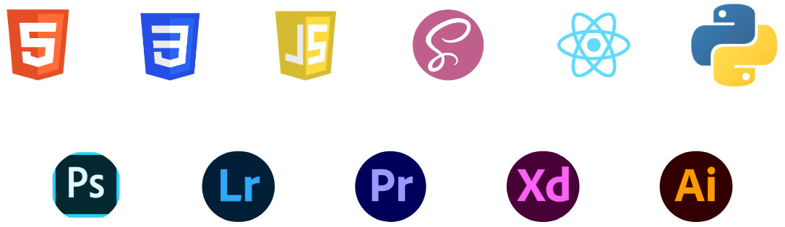
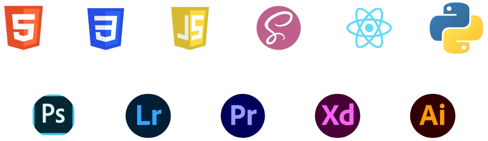

1.User Research

My design process so far has always
started by conducting research on
the problem we've been tackling.
Categorizing the users, conducting
interviews, be it 1 on 1 interviews or
focus groups, analyzing the
gathered data, making affinity
diagrams.